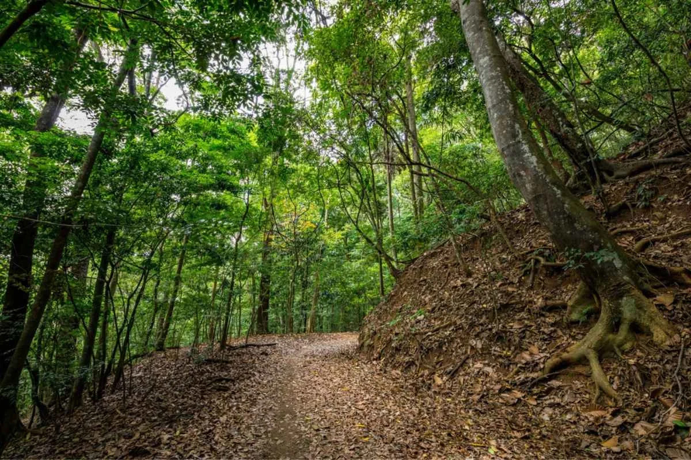

Key Attractions

Temple of the Tooth houses a sacred relic and showcases stunning Kandyan architecture and cultural heritage.

Royal Botanical Gardens feature tropical flora, giant trees, and colorful orchids for nature lovers and photography.

Kandy Lake is a peaceful spot for walking, boating, and enjoying reflections of the city and surrounding hills.

Witness Kandyan cultural dance performances with traditional music, costumes, and intricate movements.

Udawatte Forest Gardens offers scenic walking trails, birdwatching, and a serene escape in the hills.